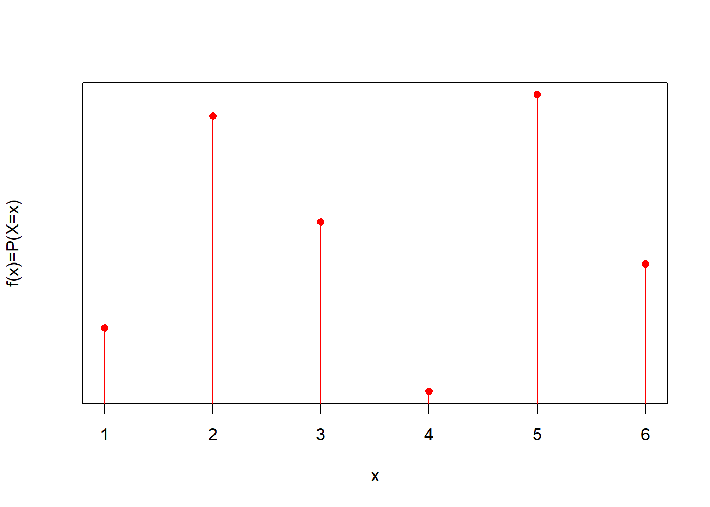
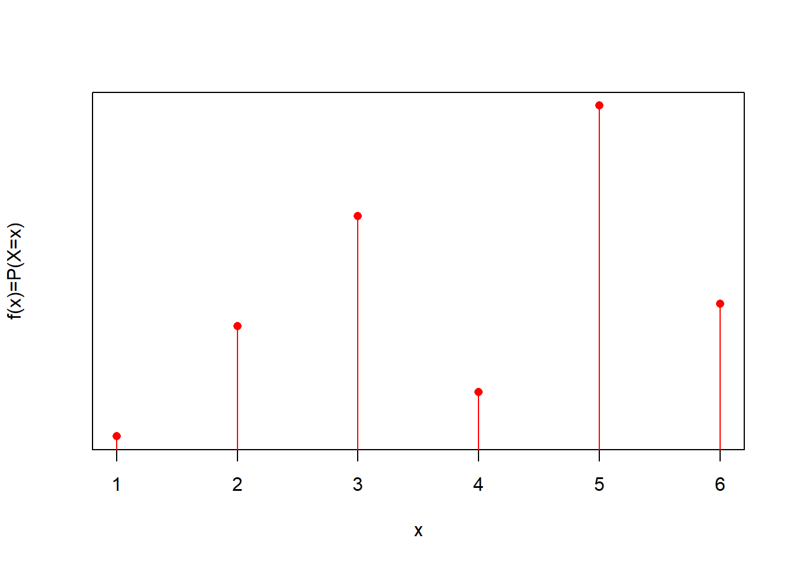
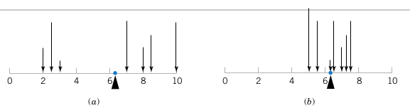
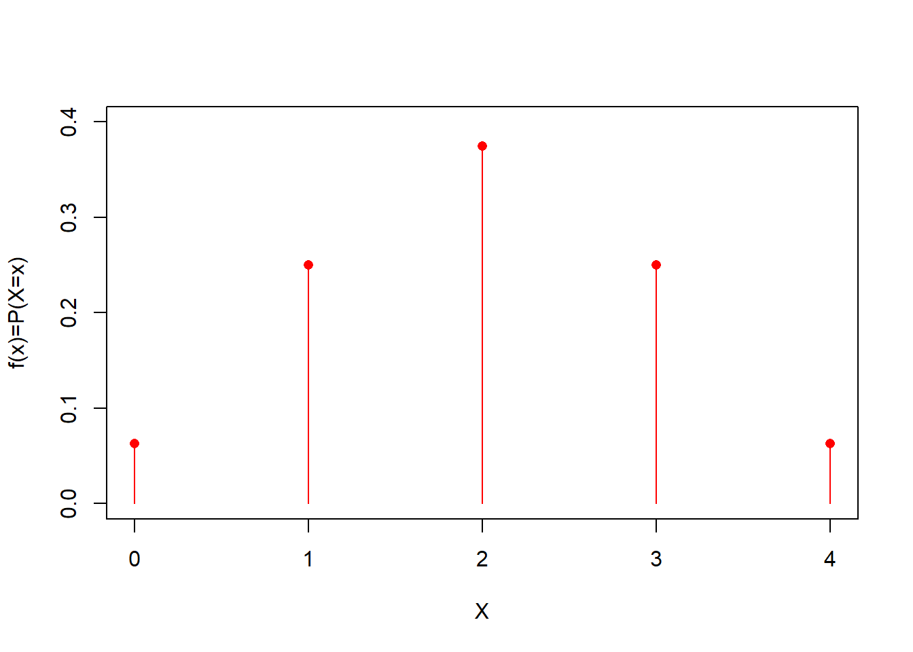
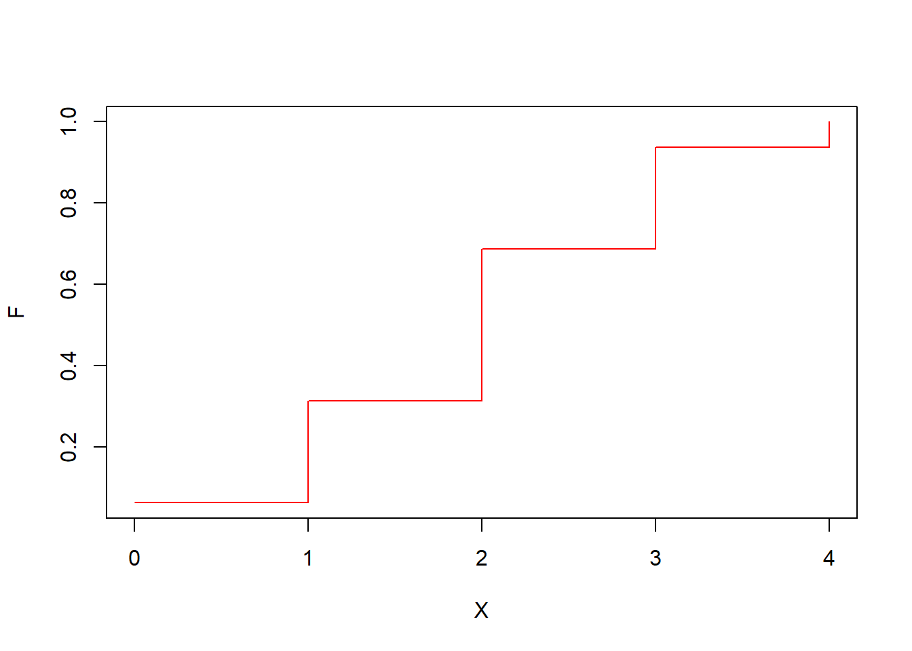

Chapter 5 Variables aleatorias discretas
5.1 Objetivo
En este capítulo definiremos las variables aleatorias y estudiaremos variables aleatorias discretas.
Definiremos la función de masa de probabilidad y sus principales propiedades de media y varianza. Siguiendo el proceso de abstracción de las frecuencias relativas en probabilidades, también definimos la distribución de probabilidad como el caso límite de la frecuencia relativa acumulada.
5.2 Frecuencias relativas
Las frecuencias relativas de los resultados de un experimento aleatorio son una medida de su propensión. Podemos usarlos como estimadores de sus probabilidades, cuando repetimos el experimento aleatorio muchas veces (\(n \rightarrow \infty\)).
Definimos tendencia central (promedio), dispersión (varianza muestral) y la distribución de frecuencias de los datos (\(F_i\)).
En términos de probabilidades, ¿cómo se definen estas cantidades?

5.3 Variable aleatoria
Definimos las frecuencias relativas sobre las observaciones de los experimentos. Ahora definimos las cantidades equivalentes para las probabilidades en términos de los resultados de los experimentos. Nos ocuparemos únicamente de resultados de tipo numérico.
Una variable aleatoria es un símbolo que representa un resultado numérico de un experimento aleatorio. Escribimos la variable aleatoria en mayúsculas (es decir, \(X\)).
Definición:
Una variable aleatoria es una función que asigna un número real a un evento del espacio muestral de un experimento aleatorio.
Recuerda que un evento puede ser un resultado o una colección de resultados.
Cuando la variable aleatoria toma un valor, indica la realización de un evento de un experimento aleatorio.
Ejemplo:
Si \(X \in \{0,1\}\), entonces decimos que \(X\) es una variable aleatoria que puede tomar los valores \(0\) o \(1\).
5.4 Eventos de observar una variable aleatoria
Hacemos la distinción entre variables en el espacio modelo con letras mayúsculas, como entidades abstractas, y la realización de un evento o resultado particular. Por ejemplo:
- \(X=1\) es el evento de observar la variable aleatoria \(X\) con valor \(1\)
- \(X=2\) es el evento de observar la variable aleatoria \(X\) con valor \(2\)
…
En general:
- \(X=x\) es el evento de observar la variable aleatoria \(X\) (\(X\) mayúscula) con valor \(x\) (\(x\) pequeño).
5.5 Probabilidad de variables aleatorias
Nos interesa asignar probabilidades a los eventos de observar un valor particular de una variable aleatoria.
Por ejemplo, para los dados escribiremos la tabla de probabilidad como
| \(X\) | Probabilidad |
|---|---|
| \(1\) | \(P(X=1)=1/6\) |
| \(2\) | \(P(X=2)=1/6\) |
| \(3\) | \(P(X=3)=1/6\) |
| \(4\) | \(P(X=4)=1/6\) |
| \(5\) | \(P(X=5)=1/6\) |
| \(6\) | \(P(X=6)=1/6\) |
donde hacemos explícitos los eventos de que la variable toma un resultado dado \(X=x\).
5.6 Funciones de probabilidad
Debido a que \(x\) (minúscula) es una variable numérica, las probabilidades de la variable aleatoria se pueden dibujar

o escrir como una función
\[f(x)=P(X=x)=1/6\]
5.7 Funciones de probabilidad
Podemos crear cualquier tipo de función de probabilidad si satisfacemos las reglas de probabilidad de Kolmogorov:
Para una variable aleatoria discreta \(X \in \{x_1 , x_2 , .. , x_M\}\), una función de masa de probabilidad que se usa para calcular probabilidades
- \(f(x_i)=P(X=x_i)\)
siempre es positiva
- \(f(x_i)\geq 0\)
y su suma sobre todos los valores de la variable es \(1\):
- \(\sum_{i=1}^M f(x_i)=1\)
Donde \(M\) es el número de resultados posibles.
Ten en cuenta que la definición de \(X\) y su función de masa de probabilidad es general sin referencia a ningún experimento. Las funciones viven en el espacio modelo (abstracto).
Aquí tenemos un ejemplo

\(X\) y \(f(x)\) son objetos abstractos que pueden corresponder o no a un experimento. Tenemos la libertad de construirlos como queramos siempre que respetemos su definición.
Las funciones de masa de probabilidad tienen algunas propiedades que se derivan exclusivamente de su definición.
5.8 Probabilidades y frecuencias relativas
Considera el ejemplo
Haz el siguiente experimento: En una urna pon \(8\) bolas y:
- marca \(1\) bola con el número \(-2\)
- marca \(2\) bolas con el número \(-1\)
- marca \(2\) bolas con el número \(0\)
- marca \(2\) bolas con el número \(1\)
- marca \(1\) bolas con el número \(2\)
Y considere realizar el siguiente experimento aleatorio: Tome una bola y lea el número.
A partir de la probabilidad clásica, podemos escribir la tabla de probabilidades, para lo cual no necesitamos realizar ningún experimento
| \(X\) | \(P(X=x)\) |
|---|---|
| \(-2\) | \(1/8=0.125\) |
| \(-1\) | \(2/8=0.25\) |
| \(0\) | \(2/8=0.25\) |
| \(1\) | \(2/8=0.25\) |
| \(2\) | \(1/8=0.125\) |
Ahora, realicemos el experimento \(30\) veces y escribamos la tabla de frecuencia
| \(X\) | \(f_i\) |
|---|---|
| \(-2\) | \(0.132\) |
| \(-1\) | \(0.262\) |
| \(0\) | \(0.240\) |
| \(1\) | \(0.248\) |
| \(2\) | \(0.118\) |
La probabilidad frecuentista nos dice \[lim_{N \rightarrow \infty} f_i = f(x_i)=P(X=x_i)\] Entonces, si no conocíamos el montaje del experimento (caja negra), lo mejor que podemos hacer es estimar las probabilidades con las frecuencias, obtenidas de \(N\) repeticiones del experimento aleatorio:
\[f_i = \hat{P}_i\]

Cada vez que estimamos las probabilidades, nuestras estimaciones \(\hat{P}_i=f_i\) cambian. Pero \(P_i\) es una cantidad abstracta que nunca cambia. A medida que aumenta \(N\), nos acercamos más a ella.
5.9 La media o el valor esperado
Cuando discutimos las estadísticas de resumen de los datos, definimos el centro de las observaciones como un valor alrededor del cual se concentran las frecuencias de los resultados.
Usamos el promedio para medir el centro de gravedad de los datos. En términos de las frecuencias relativas de los valores de los resultados discretos, escribimos el promedio como
\(\bar{x}= \sum_{i=1}^M x_i \frac{n_i}{N}=\) \[\sum_{i=1}^M x_i f_i\]
Definición
La media (\(\mu\)) o valor esperado de una variable aleatoria discreta \(X\), \(E(X)\), con función de masa \(f(x)\) está dada por
\[ \mu = E(X)= \sum_{i=1}^M x_i f(x_i) \]

Es el centro de gravedad de las probabilidades: El punto donde se equilibran las cargas de probabilidad.
De la definición tenemos
\[\bar{x} \rightarrow \mu\] en el límite cuando \(N \rightarrow \infty\) como la frecuencia tiende a la función de masa de probabilidad \(f_i \rightarrow f(x_i)\).
Ejemplo
¿Cuál es la media de \(X\) si su función de masa de probabilidad \(f(x)\) está dada por
| \(X\) | \(f(x)=P(X=x)\) |
|---|---|
| \(0\) | \(1/16\) |
| \(1\) | \(4/16\) |
| \(2\) | \(6/16\) |
| \(3\) | \(4/16\) |
| \(4\) | \(1/16\) |

\[ \mu =E(X)=\sum_{i=1}^m x_i f(x_i) \]
\(E(X)=\)0 * 1/16 + 1 * 4/16 + 2 * 6/16 + 3 * 4/16 + 4 * 1/16 =2
La media \(\mu\) es el centro de gravedad de la función de masa de probabilidad y no cambia. Sin embargo, el promedio \(\bar{x}\) es el centro de gravedad de las observaciones (frecuencias relativas) cambia con diferentes datos.
5.10 Varianza
Cuando discutimos los estadísticos de resumen, también definimos la dispersión de las observaciones como una distancia promedio de los datos al promedio.
Definición
La varianza, escrita como \(\sigma^2\) o \(V(X)\), de una variable aleatoria discreta \(X\) con función de masa \(f(x)\) viene dada por
\[\sigma^2 = V(X)= \sum_{i=1}^M (x_i-\mu)^2 f(x_i)\] \(\sigma=\sqrt{V(X)}\) se llama la desviación estándar de la variable aleatoria.
La varianza es la dispersión de las probabilidades con respecto a la media: El momento de inercia de las probabilidades sobre la media.
Ejemplo
¿Cuál es la varianza de \(X\) si su función de masa de probabilidad \(f(x)\) está dada por
| \(X\) | \(f(x)=P(X=x)\) |
|---|---|
| \(0\) | \(1/16\) |
| \(1\) | \(4/16\) |
| \(2\) | \(6/16\) |
| \(3\) | \(4/16\) |
| \(4\) | \(1/16\) |
\[\sigma^2 =V(X)=\sum_{i=1}^m (x_i-\mu)^2 f(x_i)\]
\(V(X)=\)(0-2)\(^2\)* 1/16 + (1-2)\(^2\)* 4/16 + (2- 2)\(^2\)* 6/16 + (3-2)\(^2\)* 4/16 + (4-2)\(^2\)* 1/ 16 = 1
\[V(X)=\sigma^2=1\] \[\sigma=1\]
5.11 Funciones de probabilidad para funciones de \(X\)
En muchas ocasiones, estaremos interesados en resultados que sean función de las variables aleatorias. Quizás nos interese el cuadrado del número de contagios de gripe, o la raíz cuadrada del número de correos electrónicos en una hora.
Definición
Para cualquier función \(h\) de una variable aleatoria \(X\), con función de masa \(f(x)\), su valor esperado viene dado por
\[ E[h(X)]= \sum_{i=1}^M h(x_i) f(x_i) \]
Esta es una definición importante que nos permite probar tres propiedades de la media y la varianza que se usan con frecuencia:
La media de una función lineal es la función lineal de la media: \[E(a\times X +b)= a\times E(X) +b\] para \(a\) y \(b\) escalares (números ).
La varianza de una función lineal de \(X\) es:\[V(a\times X +b)= a^2\times V(X)\]
La varianza con respecto al origen es la varianza con respecto a la media más la media al cuadrado: \[E(X^2)=V(X)+E(X)^2\]
Ejemplo
¿Cuál es la varianza \(X\) con respecto al origen, \(E(X^2)\), si su función de masa de probabilidad \(f(x)\) está dada por
| \(X\) | \(f(x)=P(X=x)\) |
|---|---|
| \(0\) | \(1/16\) |
| \(1\) | \(4/16\) |
| \(2\) | \(6/16\) |
| \(3\) | \(4/16\) |
| \(4\) | \(1/16\) |
\[E(X^2) =\sum_{i=1}^m x_i^2 f(x_i)\]
\(E(X^2)=\)(0)\(^2\)* 1/16 + (1)\(^2\)* 4/16 + (2) \(^2\)* 6/16 + (3)\(^2\)* 4/16 + (4)\(^2\)* 1/16 =5
También podemos verificar:
\[E(X^2)=V(X)+E(X)^2\]
\(5=1+2^2\)
5.12 Distribución de probabilidad
Cuando discutimos las estadísticas de resumen, también definimos la distribución de frecuencias (o la frecuencia acumulada relativa) \(F_i\). \(F_i\) es una cantidad importante porque es una función continua \(F_x\) es por lo tanto una función de rango continuo, incluso si los resultados son discretos.
Definición:
La función de distribución de probabilidad se define como
\[F(x)=P(X\leq x)=\sum_{x_i\leq x} f(x_i) \]
Esa es la probabilidad acumulada hasta un valor dado \(x\)
\(F(x)\) satisface por lo tanto satisface:
- \(0\leq F(x) \leq 1\)
- Si \(x \leq y\), entonces \(F(x) \leq F(y)\)
Para la función de masa de probabilidad:
| \(X\) | \(f(x)=P(X=x)\) |
|---|---|
| \(0\) | \(1/16\) |
| \(1\) | \(4/16\) |
| \(2\) | \(6/16\) |
| \(3\) | \(4/16\) |
| \(4\) | \(1/16\) |
La distribución de probabilidad es:
\[ F(x)= \begin{cases} 1/16,& \text{if } 0 \leq x < 1\\ 5/16,& 1\leq x < 2\\ 11/16,& 2\leq x < 3\\ 15/16,& 4\leq x < 5\\ 16/16,& x \leq 5\\ \end{cases} \]
Para \(X \in \mathbb{Z}\)

5.13 Función de probabilidad y distribución de probabilidad
La función de probabilidad y la distribución son equivalentes. Podemos obtener uno del otro y viceversa.
\[f(x_i)=F(x_i)-F(x_{i-1})\]
con
\[f(x_1)=F(x_1)\]
para \(X\) tomando valores en \(x_1 \leq x_2 \leq ... \leq x_n\)
Ejemplo
De la distribución de probabilidad:
\[ F(x)= \begin{cases} 1/16,& \text{if } 0 \leq x < 1\\ 5/16,& 1\leq x < 2\\ 11/16,& 2\leq x < 3\\ 15/16,& 4\leq x < 5\\ 16/16,& x \leq 5\\ \end{cases} \]
Podemos obtener la función masa de probabilidad.
\(f(0)=F(0)=1/16\) \(f(1)=F(1)-f(0)=5/32-1/32=4/16\) \(f(2)=F(2)-f(1)-f(0)=F(2)-F(1)=6/16\) \(f(3)=F(3)-f(2)-f(1)-f(0)=F(3)-F(2)=4/16\) \(f(4)=F(4)-F(3)=1/16\)
5.14 Cuantiles
Finalmente, podemos usar la distribución de probabilidad \(F(x)\) para definir la mediana y los cuartiles de la variable aleatoria \(X\).
En general, definimos el q-cuantil como el valor \(x_{p}\) bajo el cual hemos acumulado q*100% de la probabilidad
\[q=\sum_{i=1}^pf(x_i) = F (x_p)\]
- La mediana es valor \(x_m\) tal que \(q=0.5\)
\[F(x_{m})=0.5\]
- El cuantil \(0.05\) es el valor \(x_{r}\) tal que \(q=0.05\)
\[F(x_{r})=0.05\]
- El cuantil de \(0,25\) es el primer cuartil el valor \(x_{s}\) tal que \(q=0.25\)
\[F(x_{s})=0.25\]
5.15 Resumen

| nombres de cantidades | modelo (no observado) | datos (observados) |
|---|---|---|
| función de masa de probabilidad // frecuencia relativa | \(f(x_i)=P(X=x_i)\) | \(f_i=\frac{n_i}{N}\) |
| distribución de probabilidad // frecuencia relativa acumulada | \(F(x_i)=P(X \leq x_i)\) | \(F_i=\sum_{k\leq i} f_k\) |
| media // promedio | \(\mu=E(X)=\sum_{i=1}^M x_i f(x_i)\) | \(\bar{x}=\sum_{j=1}^N x_j/N\) |
| varianza // varianza de la muestra | \(\sigma^2=V(X)=\sum_{i=1}^M (x_i-\mu)^2 f(x_i)\) | \(s^2=\sum_{j=1}^N (x_j-\bar{x})^2/(N-1)\) |
| desviación estándar // muestra sd | \(\sigma=\sqrt{V(X)}\) | \(s\) |
| varianza con respecto al origen // 2º momento muestral | \(E(X^2)=\sum_{i=1}^M x_i^2 f(x_i)\) | \(m_2= \sum_{j=1}^N x_j^2/n\) |
Ten en cuenta:
- \(i=1...M\) es un resultado de la variable aleatoria \(X\).
- \(j=1...N\) es una observación de la variable aleatoria \(X\).
Propiedades:
- \(\sum_{i=1...N} f(x_i)=1\)
- \(f(x_i)=F(x_i)-F(x_{i-1})\)
- \(E(a\times X +b)= a\times E(X) +b\); for \(a\) and \(b\) scalars.
- \(V(a\times X +b)= a^2\times V(X)\)
- \(E(X^2)=V(X)+E(X)^2\)
5.16 Preguntas
1) Para una función de masa de probabilidad no es cierto que
\(\qquad\)a: la suma de los valores de su imagen es 1; \(\qquad\)b: sus valores pueden interpretarse como probabilidades de eventos; \(\qquad\)c: siempre es positiva; \(\qquad\)d: no puede tomar el valor 1;
2) El valor de una variable aleatoria representa
\(\qquad\)a: una observación de un experimento aleatorio; \(\qquad\)b: la frecuencia de un resultado de un experimento aleatorio; \(\qquad\)c: un resultado de un experimento aleatorio; \(\qquad\)d: una probabilidad de un resultado;
3) El valor estimado de una probabilidad \(\hat{P_i}\) es igual a la probabilidad \(P_i\) cuando el número de repeticiones del experimento aleatorio es
\(\qquad\)a: grande; \(\qquad\)b: infinito; \(\qquad\)c: pequeño \(\qquad\)d: cero;
4) Si una función de masa de probabilidad es simétrica alrededor de \(x=0\)
\(\qquad\)a: La media es menor que la mediana; \(\qquad\)b: La media es mayor que la mediana; \(\qquad\)c: La media y la mediana son iguales; \(\qquad\)d: La media y la mediana son diferentes de 0;
5) La media y la varianza
\(\qquad\)a: son inversamente proporcionales; \(\qquad\)b: son valores esperados de funciones de \(X\); \(\qquad\)c: de una función lineal son la función lineal de la media y la función lineal de la varianza; \(\qquad\)d: cambia cuando repetimos el experimento aleatorio;
5.17 Ejercicios
5.17.0.1 Ejercicio 1
Considera la siguiente variable aleatoria \(X\) sobre los resultados
| resultado | \(X\) |
|---|---|
| \(a\) | 0 |
| \(b\) | 0 |
| \(c\) | 1.5 |
| \(d\) | 1.5 |
| \(e\) | 2 |
| \(f\) | 3 |
Si cada resultado es igualmente probable, ¿cuál es la función de masa de probabilidad de \(x\)?
Encuentra:
- \(P(X>3)\)
- \(P(X=0\, \cup \, X=2 )\)
- \(P(X \leq 2)\)
5.17.0.2 Ejercicio 2
Dada la función de masa de probabilidad
| \(x\) | \(f(x)=P(X=x)\) |
|---|---|
| 10 | 0.1 |
| 12 | 0.3 |
| 14 | 0.25 |
| 15 | 0.15 |
| 17 | ? |
| 20 | 0.15 |
- ¿Cuál es su valor esperado y su desviación estándar? (R: 14,2; 2,95)
5.17.0.3 Ejercicio 3
Dada la distribución de probabilidad para una variable discreta \(X\)
\[ F(x)= \begin{cases} 0, & x < -1 \\ 0.2,& x \in [-1,0)\\ 0.35,& x \in [0,1)\\ 0.45,& x \in [1,2)\\ 1,& x \geq 2\\ \end{cases} \]
- encuentra \(f(x)\)
- encuentra \(E(X)\) y \(V(X)\) (R:1; 1.5)
- cuál es el valor esperado y la varianza de \(Y=2X+3\) (R:5, 6)
- ¿Cuál es la mediana y el primer y tercer cuartil de \(X\)? (R:2,0,2)
5.17.0.4 Ejercicio 4
Estamos probando un sistema para transmitir imágenes digitales. Primero consideramos el experimento de enviar \(3\) píxeles y tener como resultados posibles eventos como \((0,1,1)\). Este es el evento de recibir el primer píxel sin error, el segundo con error y el tercero con error.
Enumera en una columna el espacio muestral del experimento aleatorio.
En la segunda columna asigna la variable aleatoria que cuenta el número de errores transmitidos para cada resultado
Considera que tenemos un canal totalmente ruidoso, es decir, cualquier resultado de tres píxeles es igualmente probable.
¿Cuál es la probabilidad de recibir errores de \(0\), \(1\), \(2\) o \(3\) en la transmisión de \(3\) píxeles? (R: 1/8; 3/8; 3/8; 1/8)
Dibuja la función de masa de probabilidad para el número de errores
¿Cuál es el valor esperado para el número de errores? (R:1.5)
¿Cuál es su varianza? (R: 0,75)
Dibuja la distribución de probabilidad
¿Cuál es la probabilidad de transmitir al menos 1 error? (R:7/8)